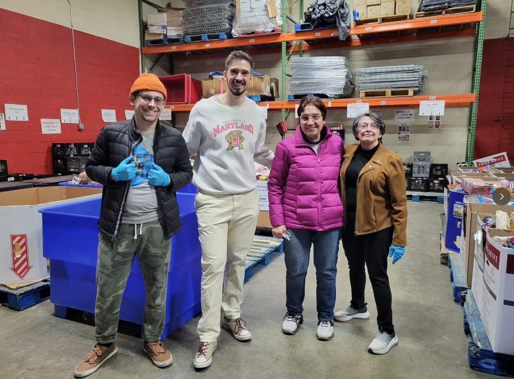
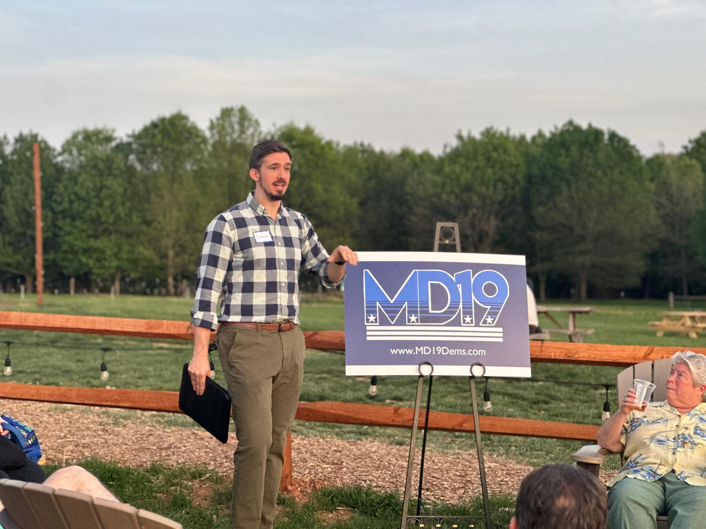
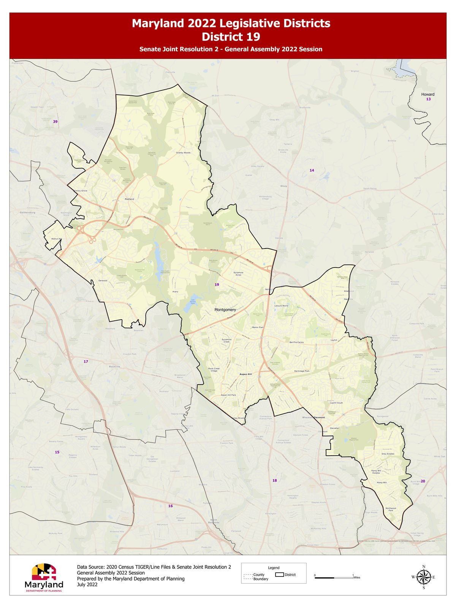

On the Ground
In the Community



Simon Weaver represents District 19 on the Montgomery County Democratic Central Committee, working year-round to organize neighbors, engage voters, and strengthen our party in every community.

I believe the Democratic Party is strongest when everyday people are at the table, not just during election season, but year-round.
I serve District 19 on the Montgomery County Democratic Central Committee, and I'm grateful to every neighbor who voted, volunteered, and shared ideas along the way. My goal is to help build a more inclusive, transparent, and engaged local party that reflects the values of our community.
The Central Committee plays a vital behind-the-scenes role in our democracy. It fills vacancies, supports candidates, and connects with voters. I'm bringing fresh energy, grassroots experience, and a commitment to genuine community engagement to that work, and I want to hear from you as I do it.
The best way to strengthen our party is to show up together. Here's where you can find me and fellow District 19 Democrats.
An evening celebrating the volunteers who power Montgomery County's Democratic Party. Hilton Rockville Executive Conference Center. Tickets & details
Last day to register or update your address or party before the general election (5:00 pm). After this, you can still register in person at early voting or on Election Day. Check your registration
The Central Committee's monthly business meeting, 6:30 pm at MCDCC headquarters, 12320 Parklawn Drive, Rockville. Open to the public, and all Democrats are welcome. Details
A nonpartisan community potluck picnic with information on voting early and election protection, 11 am to 2 pm at Leisure World Clubhouse 1 Lanai, 3700 Rossmoor Blvd. All are welcome; bring a dish to share. Ask me for details
Vote early in person any day from October 22 through October 29, 7 am to 8 pm, at any early voting center in Montgomery County. Find an early voting center
Make a plan to vote early, by mail, or in person. Check your registration, find your polling place, and see early voting dates at the Maryland State Board of Elections. Want to help get out the vote? Let me know.
No events are scheduled right now. Check back soon, or see the countywide calendar below.
For the full calendar of countywide meetings and club events, visit the Montgomery County Democratic Party.
Empowering neighbors to lead. I'm working to recruit, train, and support precinct-level organizers so that every corner of District 19 has an active Democratic presence, not just in election years, but every day.
Expanding who participates. From registration drives to ballot education, I'm pushing for creative, multilingual outreach that meets voters where they are: at community events, schools, and online.
Amplifying our community's voice. I'm working to ensure the Central Committee actively connects residents' concerns with elected officials, supporting Democratic values of equity, opportunity, and accountability.
Fostering belonging. The party should be a welcoming space for everyone: longtime Democrats, first-time voters, young people, and new Americans alike. I'm championing events, forums, and partnerships that bring us together.
The Montgomery County Democratic Central Committee is the official governing body of the Democratic Party at the county level. Unlike the County Council, it is not a legislative body. It does not pass laws or set budgets. Instead, it shapes the direction and strength of the local party itself.
Committee members help fill vacancies in elected office, support Democratic candidates up and down the ballot, organize voter registration drives, and build the infrastructure that keeps our party connected to the people it serves. It is foundational, often-overlooked work, and it matters enormously.
Filling vacancies. When a Democratic state legislator from Montgomery County leaves office mid-term, the Central Committee votes on who to recommend to the Governor as their replacement. It's one of the committee's most consequential jobs, and residents can follow the process and weigh in.
Get connected. Committee meetings, the party calendar, and ways to volunteer are all on the Montgomery County Democratic Party website. If you have questions about how the committee works, I'm always happy to explain.

District 19 spans a wide swath of Montgomery County, covering communities including Aspen Hill, Glenmont, Wheaton, Kemp Mill, Four Corners, Leisure World, Layhill, Olney, Norbeck, Norwood, Derwood, Redland, and Shady Grove, among others.
It is one of the most vibrant and diverse areas in the state, home to longtime residents, new Americans, young families, and seniors. Our neighborhoods are connected by a shared commitment to strong schools, safe communities, and a better future for everyone who calls District 19 home.
Map source: Maryland Department of Planning, 2022 Legislative Districts

The election is over, but the work of building a strong party is just getting started. Here's how you can be part of it.
Help with voter registration, get-out-the-vote efforts, and community events in District 19.
Email me →Become a precinct leader and be the Democratic point person for your own neighborhood.
Learn more →Have a question, a concern, or an idea for the party? I read every message.
Get in touch →